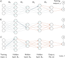

Backpropagation
When it comes to training models and finding the best parameters, there are two big challenges specific to neural networks:
Since the largest models at the time of writing have \(∼10^{12}\) parameters, we need a way to calculate the gradients \(\frac{\partial L}{\partial \phi}\) efficiently.
This is challenging not only because of the sheer number of parameters but also because the gradient needs to be computed for every parameter at every iteration of the training algorithm.
Initializing the parameters for neural networks can be very tricky. If it is not done carefully, the initial losses and their gradients can be extremely large or small.
As we saw previously, the derivatives of the loss \(\frac{\partial \ell_{i}}{\partial\boldsymbol\beta_{k}}\) and \(\frac{\partial \ell_{i}}{\partial\boldsymbol\Omega_{k}}\) tell us how the loss changes when we make a small change to the parameters. Optimization algorithms exploit this information to manipulate the parameters so that the loss becomes smaller.
The backpropagation algorithm computes these derivatives \(\frac{\partial \ell_{i}}{\partial\boldsymbol\beta_{k}}\) and \(\frac{\partial \ell_{i}}{\partial\boldsymbol\Omega_{k}}\) in an efficient manner in two main phases: 1) Forward Pass and 2) Backward Pass.
Forward Pass
During the forward pass, the network processes the input data and computes the activations of all hidden units layer by layer, from the input layer until the output is obtained.
The activations at each layer are saved to be used during the second phase of backpropagation to compute the gradients efficiently.
Note that the effects of any small change to the weight will be scaled by the activation of the source hidden unit. For example, the brown weight is applied to the second hidden unit at layer 1; if the activation of this unit doubles, then the effect of a small change to the brown weight will double too. Hence, to compute the derivatives of the weights, we need to calculate and store the activations at the hidden layers. This is known as the forward pass since it involves running the network equations sequentially.
BackwardPass
During the backward pass, the network uses the stored activations from the forward pass to compute the gradients of the loss with respect to each parameter efficiently. This is done by propagating the error from the output layer back through the network to the input layer, hence the name “backpropagation.”

Panel a (top): To compute how a change to a weight feeding into layer \(h_3\) (brown arrow) changes the loss, we need to know how the hidden unit in \(h_3\) changes the model output \(f\) and how \(f\) changes the loss (blue arrows).
Panel b (center): To compute how a small change to a weight feeding into \(h_2\) (brown arrow) changes the loss, we need to know (i) how the hidden unit in \(h_2\) changes \(h_3\), (ii) how \(h_3\) changes \(f\), and (iii) how \(f\) changes the loss (blue arrows).
Panel c (bottom): Similarly, to compute how a small change to a weight feeding into \(h_1\) (brown arrow) changes the loss, we need to know how \(h_1\) changes \(h_2\) and how these changes propagate through to the loss (blue arrows). The backward pass first computes derivatives at the end of the network and then works backward to exploit the inherent redundancy of these computations.
Scalars example
Consider a model \(f[x,\boldsymbol\phi]\) with eight scalar parameters \(\boldsymbol\phi= \{\beta_0,\omega_0,\beta_1,\omega_1,\beta_2,\omega_2,\beta_3,\omega_3\}\) that consists of a composition of the functions sin[•],exp[•], and cos[•]:
\[\begin{eqnarray} \mbox{f}[x,\boldsymbol\phi] = \beta_3+\omega_3\cdot\cos\Bigl[\beta_2+\omega_2\cdot\exp\bigl[\beta_1+\omega_1\cdot\sin[\beta_0+\omega_0\cdot x]\bigr]\Bigr], \end{eqnarray}\]
and a least squares loss function \(L[\boldsymbol\phi] = \sum_i \ell_i[\boldsymbol\phi]\) with individual terms:
\[\begin{eqnarray} \ell_i = (\mbox{f}[x_i,\boldsymbol\phi]-y_i)^2, \end{eqnarray}\]
where, as usual, \(x_i\) is the \(i^{th}\) training input, and \(y_i\) is the \(i^{th}\) training output.
You can think of this as a simple neural network with one input, one output, one hidden unit at each layer, and different activation functions sin[•],exp[•], and cos[•] between each layer.
We aim to compute the derivatives:
\[\begin{eqnarray} \frac{\partial \ell_i}{\partial \beta_{0}}, \quad \frac{\partial \ell_i}{\partial \omega_0}, \quad \frac{\partial \ell_i}{\partial \beta_{1}}, \quad \frac{\partial \ell_i}{\partial \omega_1}, \quad \frac{\partial \ell_i}{\partial \beta_{2}}, \quad \frac{\partial \ell_i}{\partial \omega_{2}}, \quad \frac{\partial \ell_i}{\partial \beta_{3}}, \quad\mbox{and} \quad \frac{\partial \ell_i}{\partial \omega_{3}}. \end{eqnarray}\]
Of course, we could find expressions for these derivatives by hand and compute them directly.
However, some of these expressions are quite complex. For example:
\[\begin{eqnarray}\label{eq:train2_complicated_deriv} \frac{\partial \ell_i}{\partial \omega_{0}} &=& -2 \left( \beta_3+\omega_3\cdot\cos\Bigl[\beta_2+\omega_2\cdot\exp\bigl[\beta_1+\omega_1\cdot\sin[\beta_0+\omega_0\cdot x_i]\bigr]\Bigr]-y_i\right)\nonumber \\ &&\hspace{0.5cm}\cdot \omega_1\omega_2\omega_3\cdot x_i\cdot\cos[\beta_0+\omega_0 \cdot x_i]\cdot\exp\Bigl[\beta_1 + \omega_1 \cdot \sin[\beta_0+\omega_0\cdot x_i]\Bigr]\nonumber\\ && \hspace{1cm}\cdot \sin\biggl[\beta_2+\omega_2\cdot \exp\Bigl[\beta_1 + \omega_1 \cdot \sin[\beta_0+\omega_0\cdot x_i]\Bigr]\biggr]. \end{eqnarray}\]
Such expressions are awkward to derive and code without mistakes and do not exploit the inherent redundancy; notice that the three exponential terms are the same.
The backpropagation algorithm is an efficient method for computing all of these derivatives at once.
It consists of (i) a forward pass, in which we compute and store a series of intermediate values and the network output, and (ii) a backward pass, in which we calculate the derivatives of each parameter, starting at the end of the network, and reusing previous calculations as we move toward the start.
Forward pass
We treat the computation of the loss as a series of calculations:
\[\begin{eqnarray} f_{0} &=& \beta_{0} + \omega_{0}\cdot x_i\nonumber\\ h_{1} &=& \sin[f_{0}]\nonumber\\ f_{1} &=& \beta_{1} + \omega_{1}\cdot h_{1}\nonumber\\ h_{2} &=& \exp[f_{1}]\nonumber\\ f_{2} &=& \beta_{2} + \omega_{2} \cdot h_{2}\nonumber\\ h_{3} &=& \cos[f_{2}]\nonumber\\ f_{3} &=& \beta_{3} + \omega_{3}\cdot h_{3}\nonumber\\ \ell_{i} &=& (f_{3}-y_{i})^2. \end{eqnarray}\]
We compute and store the values of the intermediate variables \(f_k\) and \(h_k\) (figure above).
Backward pass #1
In the first backward pass, we work backward from the end of the function computing the derivatives \(\frac{\partial \ell_i}{\partial f_k}\) and \(\frac{\partial \ell_i}{\partial h_k}\) of the loss with respect to the intermediate quantities. Each derivative is computed from the previous one by multiplying by terms of the form \(\frac{\partial f_k}{\partial h_k}\) or \(\frac{\partial h_k}{\partial f_{k-1}}\).
\[\begin{eqnarray} \frac{\partial \ell_i}{\partial f_{3}}, \quad \frac{\partial \ell_i}{\partial h_3}, \quad \frac{\partial \ell_i}{\partial f_2}, \quad \frac{\partial \ell_i}{\partial h_2}, \quad \frac{\partial \ell_i}{\partial f_1}, \quad \frac{\partial \ell_i}{\partial h_1}, \quad\mbox{and} \quad \frac{\partial \ell_i}{\partial f_0}. \end{eqnarray}\]
The first of these derivatives is straightforward:
\[\begin{eqnarray} \frac{\partial \ell_i}{\partial f_{3}} = 2(f_3-y_i). \end{eqnarray}\]
The next derivative can be calculated using the chain rule:
\[\begin{eqnarray} \frac{\partial \ell_i}{\partial h_{3}} =\frac{\partial f_{3}}{\partial h_{3}} \frac{\partial \ell_i}{\partial f_{3}} . \end{eqnarray}\]
The left-hand side asks how \(\ell_i\) changes when \(h_3\) changes. The right-hand side says we can decompose this into (i) how \(f_3\) changes when \(h_3\) changes and (ii) how \(\ell_i\) changes when \(f_3\) changes.
In the original equations, \(h_3\) changes \(f_3\), which changes \(\ell_i\), and the derivatives represent the effects of this chain. Notice that we already computed the second of these derivatives, and the other is the derivative of \(\beta_3 + \omega_3\cdot h_3\) with respect to \(h_3\), which is \(\omega_3\). We continue in this way, computing the derivatives of the output with respect to these intermediate quantities (figure below):
\[\begin{eqnarray} \frac{\partial \ell_i}{\partial f_{2}} &=& \frac{\partial h_{3}}{\partial f_{2}}\left( \frac{\partial f_{3}}{\partial h_{3}}\frac{\partial \ell_i}{\partial f_{3}} \right) \nonumber \\ \frac{\partial \ell_i}{\partial h_{2}} &=& \frac{\partial f_{2}}{\partial h_{2}}\left(\frac{\partial h_{3}}{\partial f_{2}}\frac{\partial f_{3}}{\partial h_{3}}\frac{\partial \ell_i}{\partial f_{3}}\right)\nonumber \\ \frac{\partial \ell_i}{\partial f_{1}} &=& \frac{\partial h_{2}}{\partial f_{1}}\left( \frac{\partial f_{2}}{\partial h_{2}}\frac{\partial h_{3}}{\partial f_{2}}\frac{\partial f_{3}}{\partial h_{3}}\frac{\partial \ell_i}{\partial f_{3}} \right)\nonumber \\ \frac{\partial \ell_i}{\partial h_{1}} &=& \frac{\partial f_{1}}{\partial h_{1}}\left(\frac{\partial h_{2}}{\partial f_{1}} \frac{\partial f_{2}}{\partial h_{2}}\frac{\partial h_{3}}{\partial f_{2}}\frac{\partial f_{3}}{\partial h_{3}}\frac{\partial \ell_i}{\partial f_{3}} \right)\nonumber \\ \frac{\partial \ell_i}{\partial f_{0}} &=& \frac{\partial h_{1}}{\partial f_{0}}\left(\frac{\partial f_{1}}{\partial h_{1}}\frac{\partial h_{2}}{\partial f_{1}} \frac{\partial f_{2}}{\partial h_{2}}\frac{\partial h_{3}}{\partial f_{2}}\frac{\partial f_{3}}{\partial h_{3}}\frac{\partial \ell_i}{\partial f_{3}} \right).\label{eq:train2_simple_chain} \end{eqnarray}\]
In each case, we have already computed the quantities in the brackets in the previous step, and the last term has a simple expression. In other words, we can reuse the previously computed derivatives if we calculate them in reverse order.
Backward pass #2
Finally, we consider how the loss \(\ell_i\) changes when we change the parameters \(\{\beta_k\}\) and \(\{\omega_k\}\). Once more, we apply the chain rule (figure 7.5):
\[\begin{eqnarray} \frac{\partial \ell_i}{\partial \beta_{k}} &=& \frac{\partial f_{k}}{\partial \beta_{k}}\frac{\partial \ell_i}{\partial f_{k}}\nonumber \\ \frac{\partial \ell_i}{\partial \omega_{k}} &=& \frac{\partial f_{k}}{\partial \omega_{k}}\frac{\partial \ell_i}{\partial f_{k}}. \end{eqnarray}\]
\[\begin{eqnarray} \frac{\partial f_{k}}{\partial \beta_{k}} = 1 \quad\quad\mbox{and}\quad \quad \frac{\partial f_{k}}{\partial \omega_{k}} &=& h_{k}. \end{eqnarray}\]
Backpropagation backward pass #2. Finally, we compute the derivatives \(\frac{\partial \ell_i}{\partial \beta_k}\) and \(\frac{\partial \ell_i}{\partial \omega_k}\). Each derivative is computed by multiplying the term \(\frac{\partial \ell_i}{\partial f_k}\) by \(\frac{\partial f_k}{\partial \beta_k}\) or \(\frac{\partial f_k}{\partial \omega_k}\) as appropriate.
\[\begin{eqnarray} \frac{\partial f_{0}}{\partial \beta_{0}} = 1 \quad\quad\mbox{and}\quad \quad \frac{\partial f_{0}}{\partial \omega_{0}} &=& x_{i}. \end{eqnarray}\]
Backpropagation is both simpler and more efficient than computing the derivatives in- dividually, as in equation below
\[\begin{eqnarray}\label{eq:train2_complicated_deriv2} \frac{\partial \ell_i}{\partial \omega_{0}} &=& -2 \left( \beta_3+\omega_3\cdot\cos\Bigl[\beta_2+\omega_2\cdot\exp\bigl[\beta_1+\omega_1\cdot\sin[\beta_0+\omega_0\cdot x_i]\bigr]\Bigr]-y_i\right)\nonumber \\ &&\hspace{0.5cm}\cdot \omega_1\omega_2\omega_3\cdot x_i\cdot\cos[\beta_0+\omega_0 \cdot x_i]\cdot\exp\Bigl[\beta_1 + \omega_1 \cdot \sin[\beta_0+\omega_0\cdot x_i]\Bigr]\nonumber\\ && \hspace{1cm}\cdot \sin\biggl[\beta_2+\omega_2\cdot \exp\Bigl[\beta_1 + \omega_1 \cdot \sin[\beta_0+\omega_0\cdot x_i]\Bigr]\biggr]. \end{eqnarray}\]